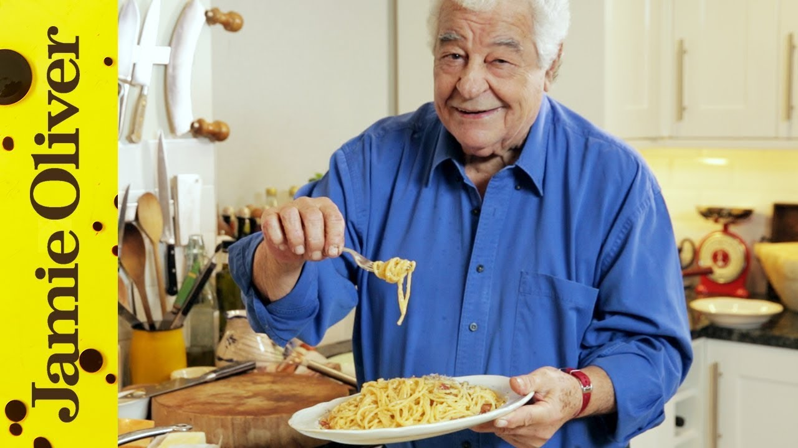

Italian Carbonara

Description
Authentic Italian Carbonara recipe, taught by Antonio Carluccio
Ingredients
Serves 2(good portions)
- 220g Spaghetti or Spaghettoni (the largest spaghetti)
- 25g Guanciale or pancetta
- 2 tbsp oliev oil
- 3 eggs
- 50g Parmesan cheese freshly grated
- Freshly ground black pepper
Steps